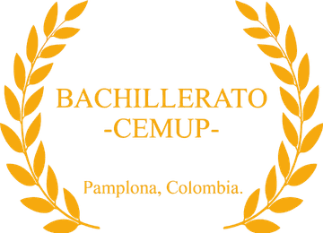
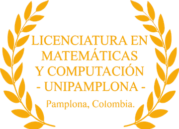
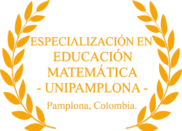
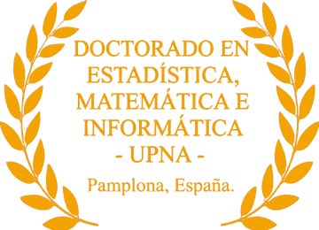

Docencia universitaria
Universidad de Pamplona (1996-2010) y Universidad Industrial de Santander (2010-2026).
Candidata a la Rectoría de la Universidad de Pamplona2026–2030
Una trayectoria que nace en Pamplona, se construye desde la educación y se proyecta al servicio de la región.




Sedes interconectadas que unen tecnología y responsabilidad ambiental.
Aurora Inés Gáfaro Rojas es pamplonesa, egresada de la Universidad de Pamplona, licenciada en Matemáticas y Computación, especialista en Educación Matemática y doctora por la Universidad Pública de Navarra, España.
Su trayectoria profesional comprende tres décadas de experiencia en docencia universitaria, investigación, dirección académica y gestión de proyectos, desarrolladas en instituciones de educación superior y en iniciativas de articulación con distintos sectores de la sociedad.
Su experiencia integra la educación, la investigación científica, la gestión institucional y el análisis de datos como herramientas para comprender realidades y contribuir a su transformación.
Universidad de Pamplona (1996-2010) y Universidad Industrial de Santander (2010-2026).
Programa y departamentos en la U. de Pamplona y Departamento de Salud Pública de la UIS.
Contratos UIS – Gobernación de Santander con plataformas y aplicaciones en salud.
Investigadora Asociada (I) de Minciencias e integrante del grupo GUINDESS-UIS.
Investigadora Asociada (I) de Minciencias e integrante del grupo GUINDESS-UIS, clasificado A1, desde 2010.
Publicaciones seleccionadas